Versão do manual: 0.2 — rascunho para revisão Baseado em: textos funcionais e telas identificadas na aplicação Público: profissionais de saúde, gestores e pessoas responsáveis pelos cadastros do sistema
Este manual reúne as orientações de uso identificadas no material de referência. Os trechos marcados como [COMPLETAR] precisam ser confirmados ou preenchidos antes da publicação. Os espaços [INSERIR PRINT] estão reservados para imagens das telas.
Sumário
- Sobre este manual
- Conhecendo o Genovah
- Acesso e tela inicial
- Pacientes
- Agendas de atendimento
- Acompanhamento pré-natal
- Alertas
- Medicamentos e posologias
- Prescrições padrão
- Atividades, exames e encaminhamentos
- Administração, cadastros e configurações
- Dúvidas e pontos a completar
1. Sobre este manual
Este documento explica, em linguagem de uso, para que servem as principais áreas do Genovah e como realizar as tarefas descritas no material de referência. As orientações clínicas e decisões sobre o cuidado permanecem sob responsabilidade do profissional de saúde.
O conteúdo de infraestrutura, programação, estrutura interna de dados e funcionalidades ainda descritas como futuras foi deixado de fora. Quando o material não informa os passos completos de uma tela, o manual sinaliza a lacuna para revisão em vez de presumir como ela funciona.
Como interpretar os marcadores
- [INSERIR PRINT — ...]: espaço para adicionar uma captura da tela indicada.
- [COMPLETAR — ...]: informação que precisa ser fornecida ou validada pela equipe responsável.
- [VALIDAR DISPONIBILIDADE]: a referência descreve a ideia ou regra, mas não confirma claramente o uso atual na interface.
2. Conhecendo o Genovah
O Genovah reúne informações de pacientes, atendimentos, profissionais e acompanhamentos em um só sistema. O foco descrito no material é o acompanhamento clínico, especialmente o pré-natal.
As áreas mencionadas são:
- Pacientes: cadastro e consulta do perfil e do histórico de atendimentos.
- Atividades: registro de atividades assistenciais.
- Agendas de Atendimento: organização dos atendimentos por profissional e período.
- Acompanhamentos — Pré-Natal: abertura e acompanhamento das consultas da gestante, com registros clínicos, checklist, exames, prescrições e histórico.
- Administração e Cadastros: gestão de usuários e informações de apoio, conforme o perfil de acesso.
- Configurações: parâmetros gerais do sistema, para usuários autorizados.
As opções visíveis podem variar conforme o perfil de acesso de cada usuário.
3. Acesso e tela inicial
Para que serve
A tela inicial reúne indicadores gerais da operação. O material menciona a visualização de pacientes em atendimento e profissionais envolvidos. O sistema também apresenta a área de alertas quando há itens pendentes.
Como usar
- Acesse o Genovah pelo endereço fornecido pela sua instituição.
- Entre com sua conta de usuário.
- Na tela inicial, consulte os indicadores disponíveis e use o menu para abrir a área desejada.
- Se houver alertas, abra o sino de notificações para revisar os itens pendentes.
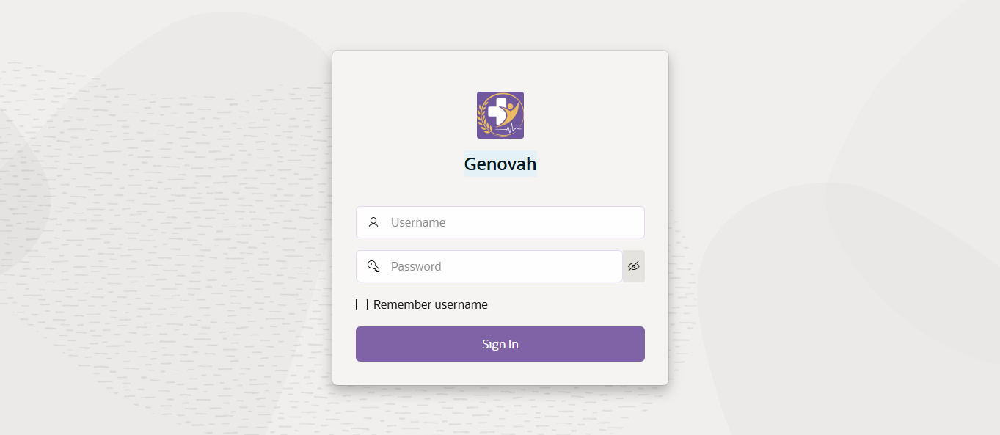
Tela de acesso ao Genovah.
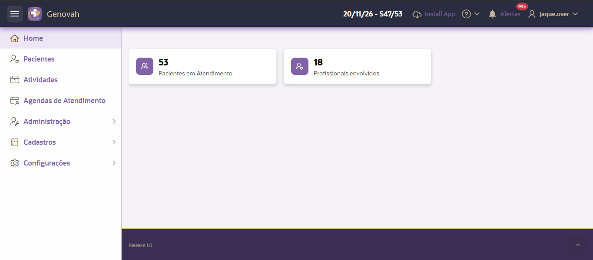
Tela inicial, com menu e indicadores.
[COMPLETAR — endereço oficial de acesso, instruções de primeiro acesso, recuperação de senha e identificação dos menus da tela inicial.]
4. Pacientes
Para que serve
A área de pacientes centraliza os dados cadastrais e o histórico de atendimentos da pessoa acompanhada. O material também indica que a classificação de risco pode ser consultada no contexto do acompanhamento pré-natal.
Como usar
- Abra Pacientes para consultar a lista.
- Para incluir uma paciente, abra a opção de cadastro e preencha os dados solicitados.
- O formulário inclui dados como nome, nome social, CPF, data de nascimento, nome da mãe, número do SUS, telefone, endereço, escolaridade e cor autodeclarada. Preencha também os demais campos apresentados que forem aplicáveis.
- Salve o cadastro. Para consultar ou atualizar uma pessoa já cadastrada, selecione-a na lista e abra seu cadastro.
O formulário também apresenta informações como sexo, tipo sanguíneo, deficiência e orientação sexual. Preencha esses dados de acordo com as orientações institucionais e com as informações fornecidas pela paciente.
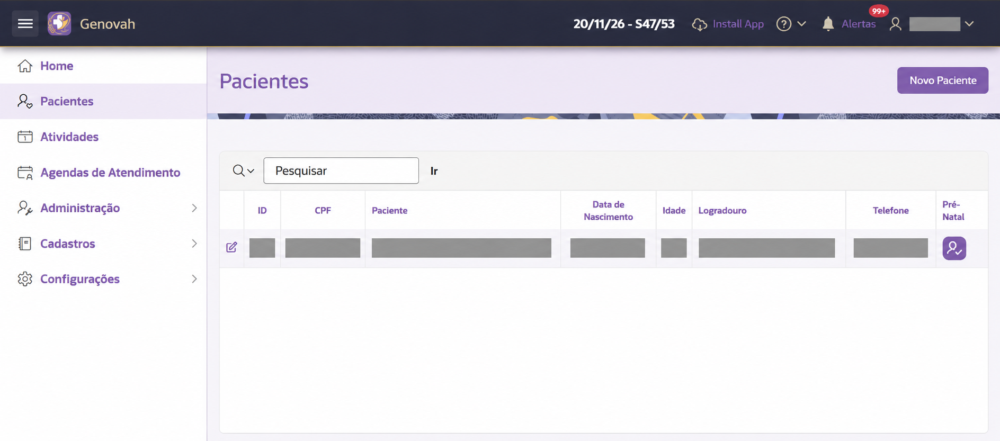
Lista de pacientes.
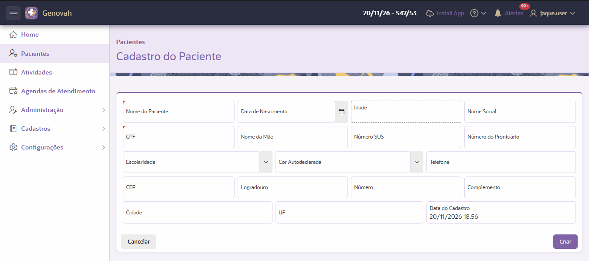
Cadastro ou perfil da paciente.
[COMPLETAR — confirmar os campos obrigatórios, como funciona a busca na lista e como abrir o histórico clínico a partir do cadastro.]
5. Agendas de atendimento
Para que serve
A agenda organiza os atendimentos por profissional e período. Os agendamentos também ajudam a acompanhar consultas futuras e identificar situações que precisam de atenção.
Como usar
- Abra Agendas de Atendimento.
- Para criar um horário, selecione a opção de novo agendamento.
- Informe paciente, profissional de saúde, especialidade, data e horário de início e fim. Acrescente observações, se necessário.
- Salve o agendamento.
- Para consultar um horário, localize-o na agenda e abra o registro correspondente.
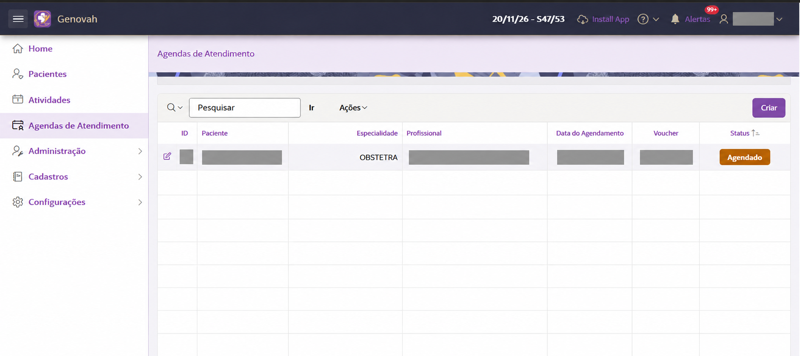
Agenda de atendimentos.
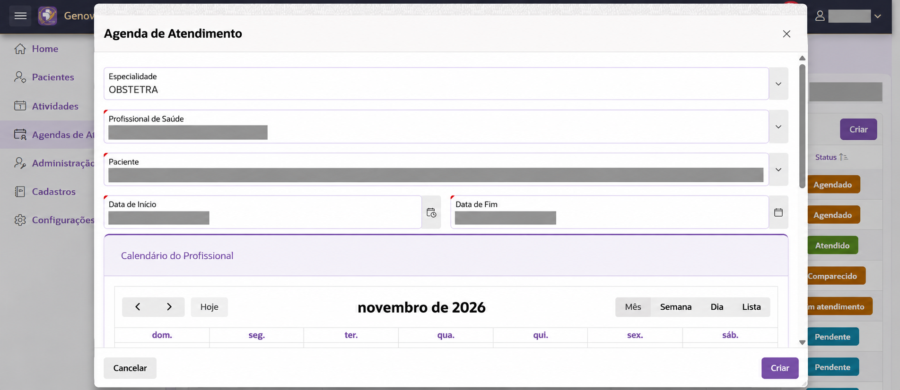
Formulário de agendamento, com paciente e dados do atendimento.
[COMPLETAR — confirmar os nomes dos botões, como alterar ou cancelar um agendamento e como atualizar a situação após o atendimento.]
6. Acompanhamento pré-natal
Para que serve
O acompanhamento pré-natal reúne os dados iniciais da gestação e os registros das consultas seguintes. Cada atendimento pode atualizar o histórico da gestante e incluir informações clínicas, checklist, exames, prescrições e encaminhamentos.
6.1 Abrir o pré-natal
Na abertura são registrados dados da gestação, incluindo a data da última menstruação e informações do ultrassom, quando aplicável. A tela também contempla peso, altura, pressão arterial, histórico de gestações e partos e observações. Esses dados apoiam o cálculo da idade gestacional, da data provável do parto e da classificação de risco.
- Acesse o cadastro da paciente.
- Inicie um novo pré-natal.
- Informe a data da última menstruação e, quando disponível, os dados do ultrassom.
- Preencha peso, altura, pressão arterial e informações sobre gestações e partos anteriores.
- Confira os dados calculados e a classificação apresentada.
- Salve a abertura e siga as opções da tela para iniciar o checklist.
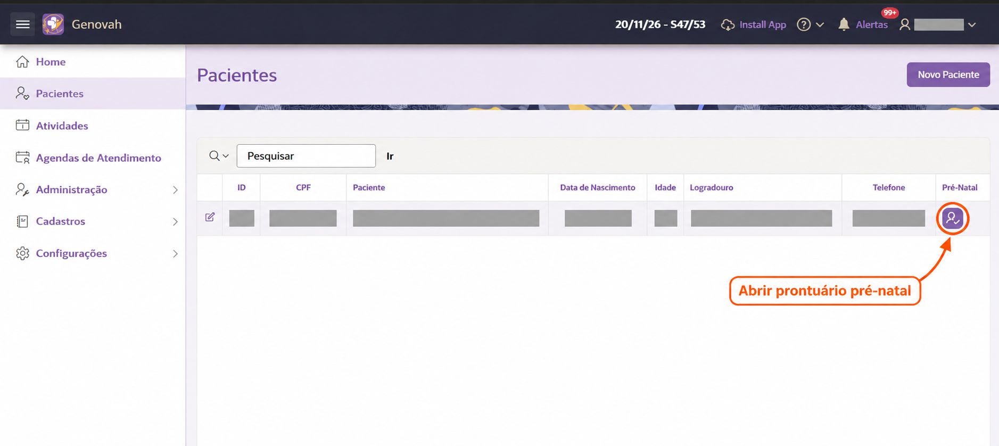
Acesso à abertura do pré-natal a partir da lista.
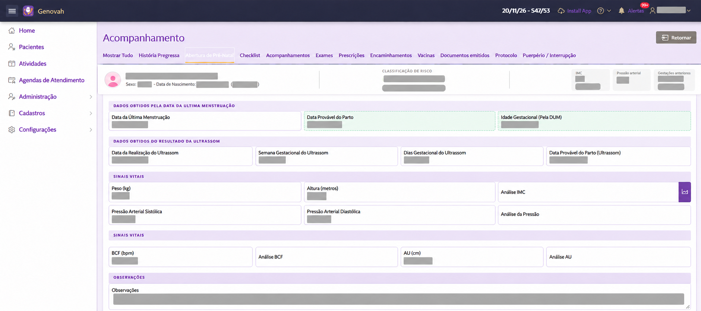
Dados da gestação e da consulta inicial.
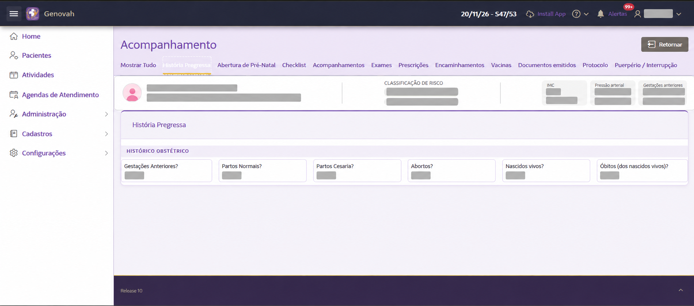
Informações do histórico gestacional.
[COMPLETAR — confirmar quais dados são obrigatórios, como registrar ausência de uma data conhecida e qual botão salva a abertura.]
6.2 Registrar uma consulta
Na consulta, o profissional registra as informações correspondentes ao atendimento, como peso, pressão arterial e outros dados clínicos disponíveis na tela. O acompanhamento também pode incluir checklist, solicitações de exames, prescrições e encaminhamentos.
- Abra o pré-natal da paciente e selecione Novo Acompanhamento.
- Informe o tipo de acompanhamento e os dados da consulta, como peso, altura, pressão arterial, altura uterina e batimento cardiofetal, conforme aplicável.
- Confira a idade gestacional e as análises apresentadas pelo sistema.
- Registre observações e preencha o checklist aplicável.
- Revise a classificação de risco apresentada pelo sistema.
- Selecione as ações necessárias, como nova prescrição, exame ou encaminhamento, conforme os protocolos da instituição.
- Salve o acompanhamento ou finalize a consulta, conforme a etapa do atendimento.
As capturas abaixo mostram as etapas do checklist inicial do pré-natal.
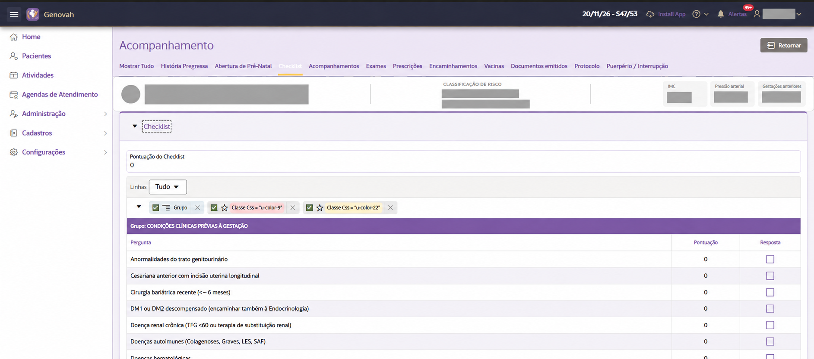
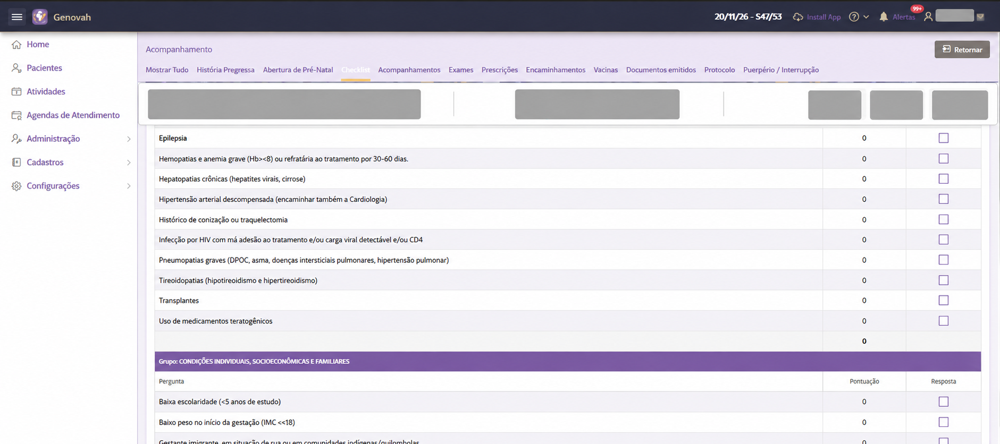
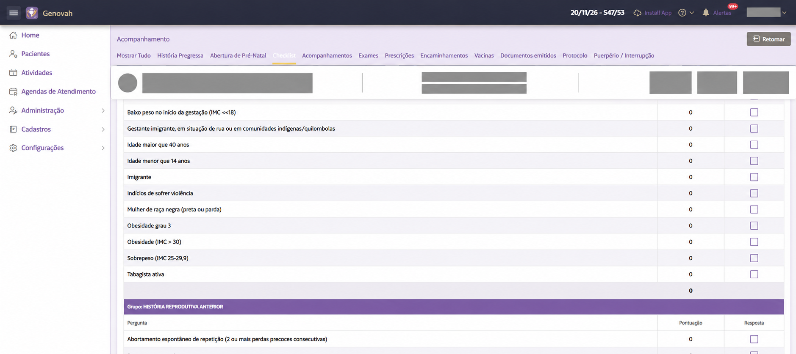
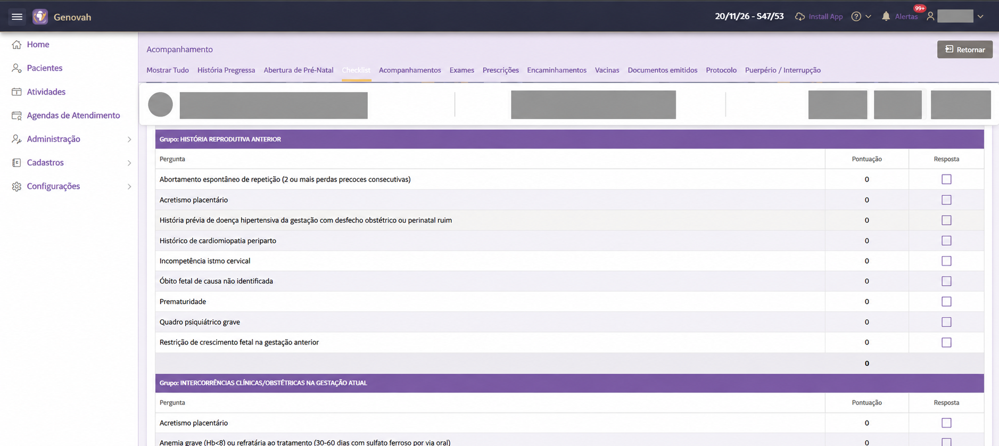
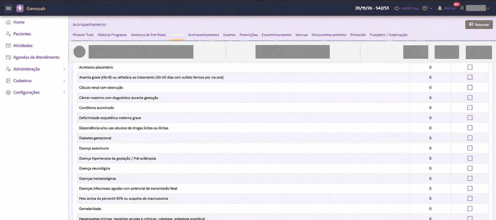
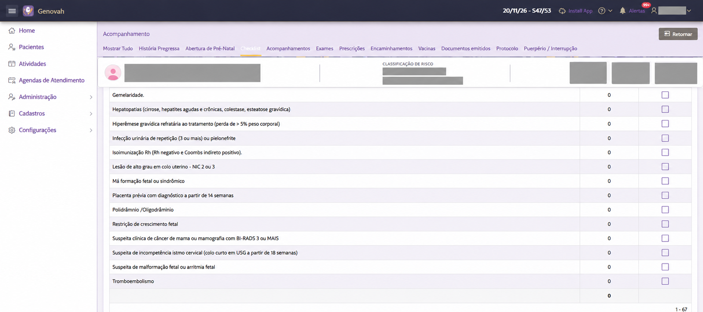
[COMPLETAR — confirmar quais campos são obrigatórios, a diferença entre salvar e finalizar, e se uma consulta finalizada pode ser corrigida ou reaberta.]
6.3 Entender a classificação de risco
O sistema apresenta a classificação em três níveis:
| Nível | Cor indicada | Significado geral |
|---|---|---|
| Baixo | Verde | Não foram identificados fatores de risco na avaliação registrada. |
| Médio | Amarelo | Há fatores que requerem atenção. |
| Alto | Vermelho | A situação requer acompanhamento intensivo. |
A classificação considera os dados registrados. O material cita antecedentes e respostas do checklist, histórico obstétrico, índice de massa corporal (IMC) calculado a partir de peso e altura e pressão arterial. A origem dos fatores pode aparecer junto ao nível de risco. O resultado deve ser interpretado pelo profissional dentro do contexto clínico.
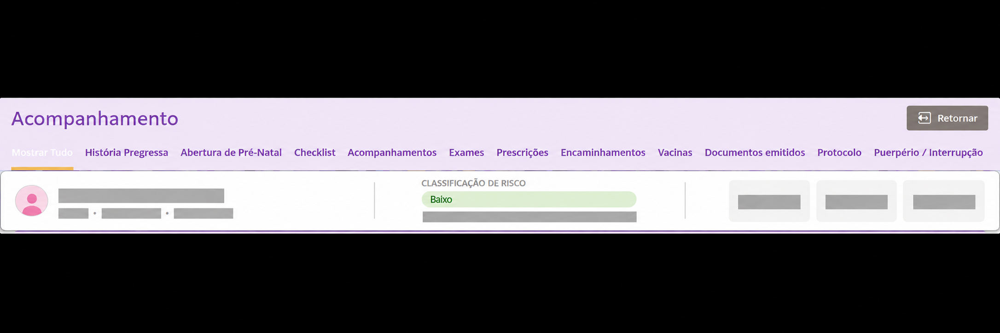
Resultado da classificação de risco após a primeira consulta.
6.4 Comparar com a consulta anterior
O material descreve uma visualização que compara a classificação da consulta atual com a anterior, incluindo indicação de aumento, redução ou manutenção do nível. Caso não exista consulta anterior, os dados da abertura do pré-natal podem servir como referência.
[VALIDAR DISPONIBILIDADE — confirmar se os cartões comparativos estão ativos na versão publicada e inserir print da tela.]
6.5 Consultar o histórico
O histórico reúne consultas anteriores e pode apresentar sinais vitais e classificações registradas. Use essa área para consultar a evolução do acompanhamento.
[INSERIR PRINT — histórico de consultas]
[COMPLETAR — caminho exato para abrir o histórico e quais informações ficam disponíveis.]
6.6 Encerrar ou registrar o desfecho
O material menciona o registro de puerpério ou interrupção da gestação como parte do acompanhamento.
[COMPLETAR — quando e por quem o pré-natal deve ser encerrado e como registrar o desfecho.]
7. Alertas
Para que servem
Os alertas chamam a atenção para situações pendentes relacionadas ao acompanhamento. O material descreve alertas de falta em consulta, ausência de próxima consulta e exame sem resultado.
Como consultar e tratar um alerta
- Se o sino de notificações estiver visível, selecione-o para abrir a lista.
- Leia a mensagem e identifique a paciente e a pendência indicada.
- Selecione Lido quando tiver revisado o alerta.
- Se precisar voltar a ele mais tarde, use Adiar e informe a data e o horário para que volte a aparecer.
Os alertas adiados deixam de aparecer até o horário escolhido. A lista é atualizada automaticamente; o material informa que ela também é atualizada periodicamente enquanto a página está aberta.
[INSERIR PRINT — sino e lista de alertas]
[INSERIR PRINT — opções Lido e Adiar]
[COMPLETAR — confirmar se é possível marcar todos como lidos, quais perfis recebem os alertas e como abrir diretamente o registro relacionado.]
8. Medicamentos e posologias
Para que serve
O cadastro de medicamentos mantém os medicamentos disponíveis para uso nas prescrições. Cada medicamento pode ter uma ou mais posologias associadas. Uma posologia descreve como o medicamento será utilizado, por exemplo, dose, unidade, frequência e duração.
Esta área deve ser utilizada por pessoas autorizadas. A inclusão de um medicamento ou de uma posologia não substitui a avaliação e a decisão clínica do profissional responsável.
8.1 Cadastrar um medicamento
- Acesse Cadastro de Medicamentos.
- Selecione Criar.
- Informe o nome do medicamento ou princípio ativo, a concentração e a forma farmacêutica.
- Salve o cadastro.
- Após salvar, abra o medicamento para incluir suas posologias.
[INSERIR PRINT — cadastro de medicamento]
8.2 Cadastrar uma posologia
- Abra o medicamento desejado.
- Na seção de posologias, selecione Adicionar Linha ou + Posologia, conforme o botão exibido.
- Informe a dose e a unidade de medida.
- Informe a frequência ou o intervalo entre as doses e a unidade de tempo.
- Quando houver prazo definido, informe a duração do tratamento e sua unidade de tempo. Para uso contínuo, indique essa condição se a tela oferecer o campo.
- Preencha uma observação, se necessário.
- Deixe a descrição em branco quando o sistema gerar o texto automaticamente.
- Salve a linha.
Exemplos de descrição: “Tomar 1 comprimido a cada 8 horas” ou “Tomar 1 comprimido ao dia por 7 dias”. Confira o texto exibido antes de utilizar a posologia em uma prescrição.
[INSERIR PRINT — campos de posologia e descrição gerada]
[COMPLETAR — confirmar os nomes atuais dos campos e os botões para salvar a linha.]
8.3 Ativar ou inativar
O material informa que medicamentos ou posologias inativados deixam de aparecer nas opções de novas prescrições. Os registros anteriores permanecem no histórico.
[COMPLETAR — indicar onde fica a opção de ativar/inativar e quais perfis podem utilizá-la.]
9. Prescrições padrão
Para que servem
Uma prescrição padrão é um modelo reutilizável que reúne um ou mais medicamentos e as respectivas posologias. Ela ajuda a padronizar prescrições frequentes. A posologia deve estar cadastrada no medicamento antes de ser selecionada no modelo.
9.1 Criar uma prescrição padrão
- Acesse a lista de Prescrições Padrão.
- Selecione Criar.
- Informe o nome da prescrição.
- Salve o registro.
- Volte à lista e abra a prescrição criada.
- Adicione uma linha para cada medicamento.
- Pesquise e selecione o medicamento.
- Selecione uma posologia disponível para aquele medicamento.
- Salve a linha e selecione Aplicar Alterações para concluir.
[INSERIR PRINT — lista e criação de prescrição padrão]
[INSERIR PRINT — seleção de medicamento e posologia]
9.2 Alterar uma prescrição padrão
Abra a prescrição desejada e ajuste os medicamentos ou posologias disponíveis. Para criar ou alterar uma posologia, acesse o cadastro do medicamento correspondente.
[COMPLETAR — confirmar os passos para alterar o nome e editar uma linha já salva.]
9.3 Remover um medicamento do modelo
- Localize o medicamento na lista da prescrição.
- Abra o menu de ações da linha, exibido antes do nome do medicamento.
- Selecione Excluir e confirme ou aplique as alterações conforme a tela.
[INSERIR PRINT — menu de ações da linha e opção Excluir]
9.4 Inativar uma prescrição padrão
O material informa que uma prescrição inativada deixa de aparecer para seleção em atendimentos, mas permanece registrada no histórico.
[COMPLETAR — confirmar onde fica a opção para inativar e como reativar, se permitido.]
10. Atividades, exames e encaminhamentos
Atividades
A área de atividades é descrita como local para registrar atividades assistenciais realizadas pelos profissionais. A tela de consulta de atividades apresenta filtros por paciente e profissional.
[INSERIR PRINT — atividades]
[COMPLETAR — exemplos de atividades disponíveis e como registrar, consultar ou corrigir uma atividade.]
Exames
O acompanhamento pode conter solicitações e resultados de exames. O material também descreve alertas para exames solicitados sem resultado, mas não detalha os passos atuais para solicitar um exame, registrar a realização ou lançar o resultado.
[INSERIR PRINT — exames no acompanhamento]
Para gerar uma solicitação, abra Solicitação de exames, selecione a paciente, escolha os exames desejados e use Gerar. A tela também oferece a opção Voltar.
[COMPLETAR — como registrar data de realização e resultado, cancelar uma solicitação e consultar exames pendentes.]
Encaminhamentos
Durante o atendimento podem ser registrados encaminhamentos, incluindo odontologia e nutrição. O material também cita vacinação. Os encaminhamentos ficam associados ao histórico da consulta.
[INSERIR PRINT — encaminhamentos disponíveis]
Para registrar um encaminhamento, abra Encaminhamento, confirme a paciente, selecione o destino em Encaminhar para, informe o motivo ou descrição e use Salvar/Imprimir.
[VALIDAR DISPONIBILIDADE — confirmar quais destinos estão ativos e se o encaminhamento deve ser impresso ou entregue de outra forma.]
Vacinas
O cadastro de vacina permite registrar qual vacina foi relacionada ao acompanhamento, a data, o lote, a situação atual, o que aconteceu e uma observação.
- Abra a opção de registro de vacina no acompanhamento da paciente.
- Informe vacina, data e lote, quando aplicável.
- Selecione a situação atual e indique o que aconteceu.
- Registre uma observação, se necessário, e salve.
[INSERIR PRINT — registro de vacina]
[COMPLETAR — confirmar como acessar a tela e esclarecer o uso da opção Desfazer.]
11. Administração, cadastros e configurações
Para que servem
Estas áreas são destinadas a usuários com acesso administrativo. O material cita gestão de usuários e perfis, profissionais de saúde, especialidades, tipos de acompanhamento e parâmetros gerais do sistema.
A área de relatórios inclui visões relacionadas a consultas em atraso e pacientes sem próxima consulta, além de relatórios de pré-natal.
Como usar
O material não apresenta passos de tela para criar usuários, atribuir perfis, manter cadastros de apoio ou alterar configurações. Essas instruções devem ser acrescentadas por um usuário administrador responsável.
[INSERIR PRINT — área de administração]
[COMPLETAR — incluir os procedimentos aprovados para usuários, perfis, profissionais, especialidades, tipos de acompanhamento e configurações; explicar os filtros e a impressão dos relatórios.]
12. Dúvidas e pontos a completar
Antes de publicar o manual, revisar e preencher os itens abaixo:
- Endereço de acesso e orientações para primeiro acesso e recuperação de senha.
- Prints atualizados da tela inicial, pacientes, agenda e acompanhamento pré-natal.
- Passos completos de cadastro, busca e atualização de pacientes.
- Passos de criação, alteração, cancelamento e consulta de agendamentos.
- Campos obrigatórios e regras para salvar, finalizar, reabrir ou corrigir uma consulta.
- Confirmação de que a comparação entre riscos de consultas está disponível na versão atual.
- Passos para registrar exames, resultados e encaminhamentos.
- Passos para ativar ou inativar medicamentos, posologias e prescrições padrão.
- Procedimentos administrativos para usuários, perfis e cadastros de apoio.
- Confirmação de quais recursos descritos no material estão liberados para todos os perfis.
Fim do manual — rascunho para validação funcional e inclusão das capturas de tela.